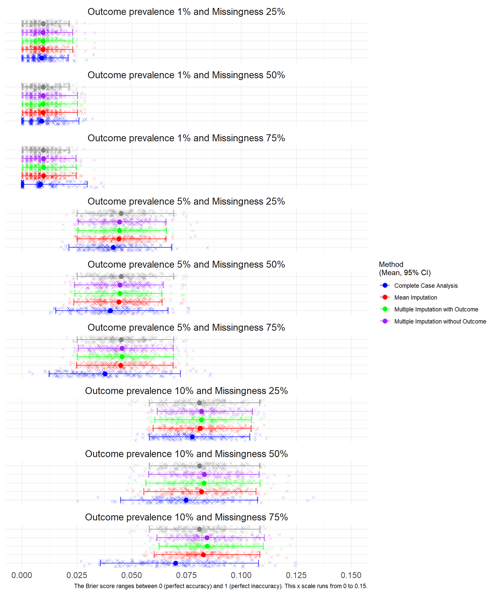
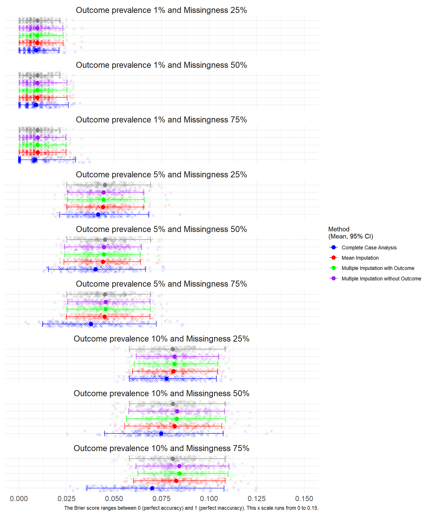
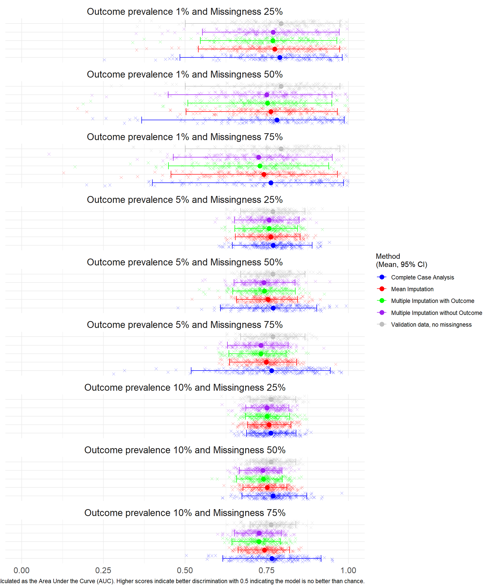
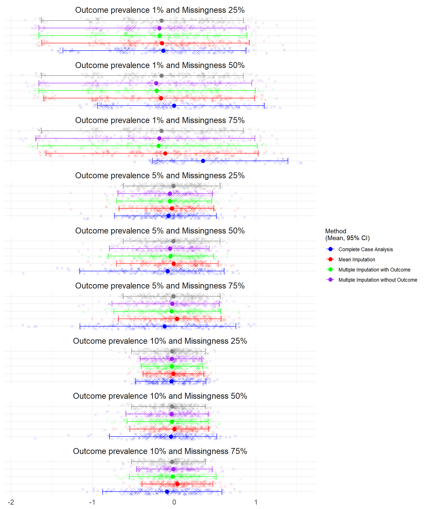
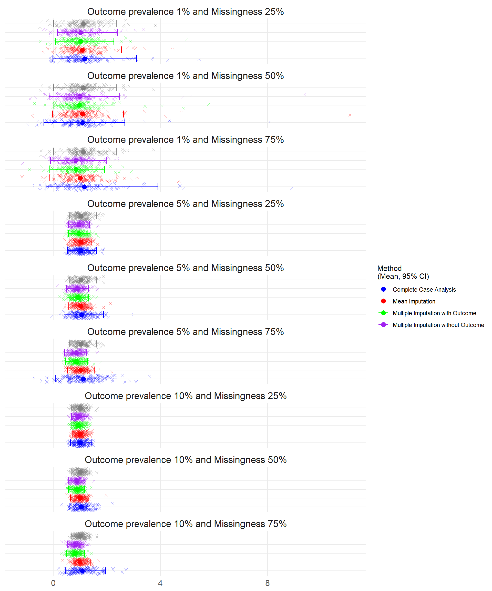
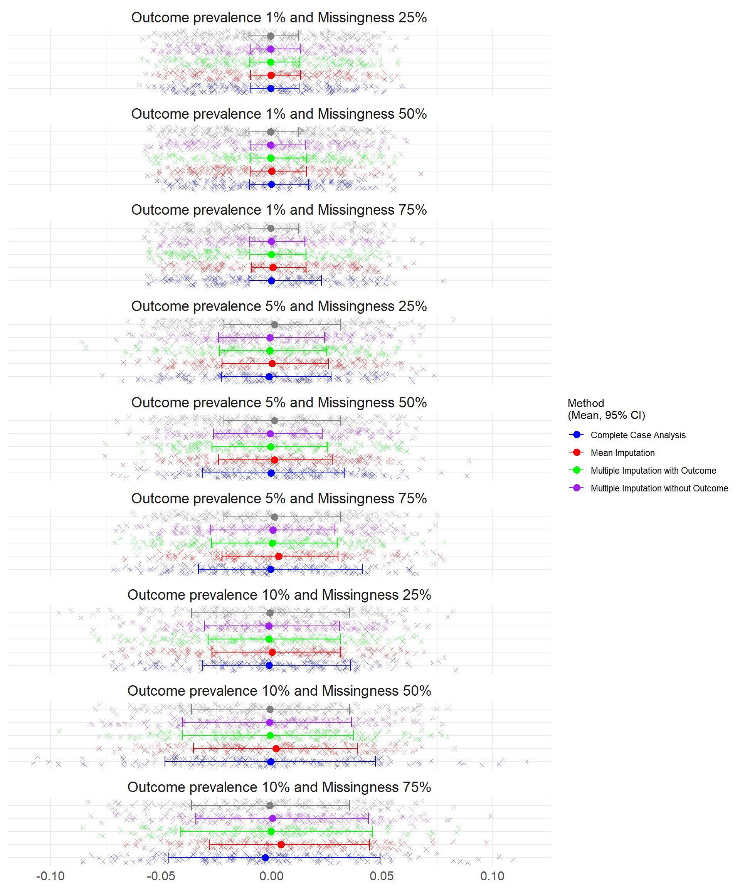
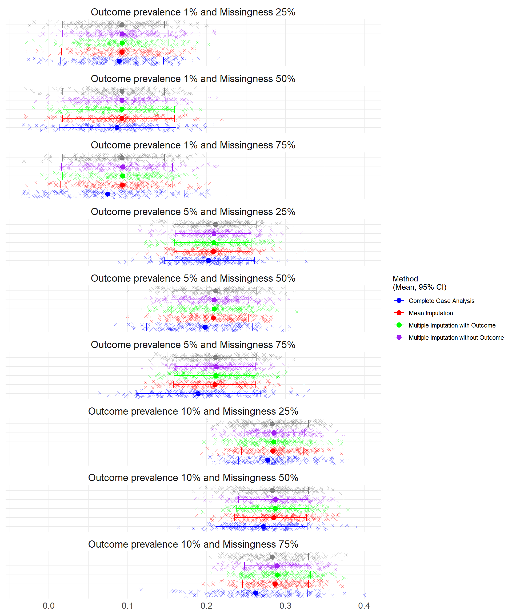

Warning: Removed 1 row containing missing values or values outside the scale range
(`geom_point()`).
At the smallest sample size, n=500. There were convergence issues where the outcome prevalence was lower (1% and 5%) and where Complete Case Analysis was used to handle the missing data as the sample size was reduced further. At missingness of 75%, almost half the simulations (46%) at 1% prevalence were unable to calculate the discrimination (AUC), calibration intercept and slope, Table 6.1.
At 75% missingness, the lowest average brier scores were observed for the CCA with the widest confidence intervals. There was limited differences in the brier scores between imputation methods, with overlapping confidence intervals. Lower prevalance scenarios had lower brier scores.
Warning: Removed 1 row containing missing values or values outside the scale range
(`geom_point()`).
The confidence intervals overlapped between the imputation methods for each scenario.
Warning: Removed 266 rows containing missing values or values outside the scale range
(`geom_point()`).
The Calibration was assessed through Calibration in the Large (CATL) and the Calibration Slope.
The ideal value of CATL is 0, which indicates perfect calibration, positive values indicate the model is underestimating the risk while negative values indicate overestimation. Larger deviations from 0 suggest poorer calibration.
Warning: Removed 233 rows containing missing values or values outside the scale range
(`geom_point()`).
The ideal value of the Calibration Slope is 1 indicating perfect calibration across all risk levels. Values less than 1 suggest overfitting (predictions are too extreme), while values greater than 1 suggest underfitting (predictions are too conservative). Values that differ significantly from 1 indicate poor calibration.
Warning: Removed 233 rows containing missing values or values outside the scale range
(`geom_point()`).
The Bias was assessed for each simulation (where 0 indicates no bias and the model estimates are on average equal to the true values).

The RMSE was assessed for each simulation where lower error indicates a better fit of the model. The lowest prevalence simulations (1%) had the lowest mean square error.

The average performance measures across 100 simulations are summarised in Table 6.1.
| Scenario | Method to handle missing data | Performance Measure | Average | Lower Confidence Interval | Upper Confidence Interval | Number of simulations that failed to converge |
|---|---|---|---|---|---|---|
| Outcome prevalence 10% and Missingness 75% | Complete Case Analysis | Calibration in the Large | -0.0892 | -0.8761 | 0.5853 | 0 |
| Outcome prevalence 10% and Missingness 75% | Complete Case Analysis | Calibration Slope | 1.0861 | 0.4559 | 1.9525 | 0 |
| Outcome prevalence 10% and Missingness 75% | Complete Case Analysis | AUC | 0.7653 | 0.6154 | 0.9162 | 0 |
| Outcome prevalence 10% and Missingness 75% | Complete Case Analysis | Brier Score | 0.0699 | 0.0357 | 0.1079 | 0 |
| Outcome prevalence 10% and Missingness 75% | Complete Case Analysis | Bias | -0.0028 | -0.0465 | 0.0491 | 0 |
| Outcome prevalence 10% and Missingness 75% | Complete Case Analysis | Mean Square Error | 0.0699 | 0.0357 | 0.1079 | 0 |
| Outcome prevalence 10% and Missingness 75% | Complete Case Analysis | Root Mean Square Error | 0.2619 | 0.1890 | 0.3284 | 0 |
| Outcome prevalence 10% and Missingness 75% | Multiple Imputation without Outcome | Calibration in the Large | -0.0096 | -0.4615 | 0.4647 | 0 |
| Outcome prevalence 10% and Missingness 75% | Multiple Imputation without Outcome | Calibration Slope | 0.8358 | 0.5358 | 1.1380 | 0 |
| Outcome prevalence 10% and Missingness 75% | Multiple Imputation without Outcome | AUC | 0.7262 | 0.6517 | 0.7946 | 0 |
| Outcome prevalence 10% and Missingness 75% | Multiple Imputation without Outcome | Brier Score | 0.0842 | 0.0616 | 0.1104 | 0 |
| Outcome prevalence 10% and Missingness 75% | Multiple Imputation without Outcome | Bias | 0.0004 | -0.0343 | 0.0438 | 0 |
| Outcome prevalence 10% and Missingness 75% | Multiple Imputation without Outcome | Mean Square Error | 0.0842 | 0.0616 | 0.1104 | 0 |
| Outcome prevalence 10% and Missingness 75% | Multiple Imputation without Outcome | Root Mean Square Error | 0.2894 | 0.2481 | 0.3322 | 0 |
| Outcome prevalence 10% and Missingness 75% | Multiple Imputation with Outcome | Calibration in the Large | -0.0186 | -0.5502 | 0.5148 | 0 |
| Outcome prevalence 10% and Missingness 75% | Multiple Imputation with Outcome | Calibration Slope | 0.8305 | 0.5035 | 1.1685 | 0 |
| Outcome prevalence 10% and Missingness 75% | Multiple Imputation with Outcome | AUC | 0.7255 | 0.6437 | 0.7912 | 0 |
| Outcome prevalence 10% and Missingness 75% | Multiple Imputation with Outcome | Brier Score | 0.0843 | 0.0625 | 0.1099 | 0 |
| Outcome prevalence 10% and Missingness 75% | Multiple Imputation with Outcome | Bias | -0.0003 | -0.0411 | 0.0455 | 0 |
| Outcome prevalence 10% and Missingness 75% | Multiple Imputation with Outcome | Mean Square Error | 0.0843 | 0.0625 | 0.1099 | 0 |
| Outcome prevalence 10% and Missingness 75% | Multiple Imputation with Outcome | Root Mean Square Error | 0.2896 | 0.2499 | 0.3315 | 0 |
| Outcome prevalence 10% and Missingness 75% | Mean Imputation | Calibration in the Large | 0.0374 | -0.3961 | 0.4733 | 0 |
| Outcome prevalence 10% and Missingness 75% | Mean Imputation | Calibration Slope | 0.9916 | 0.6596 | 1.4038 | 0 |
| Outcome prevalence 10% and Missingness 75% | Mean Imputation | AUC | 0.7434 | 0.6625 | 0.8206 | 0 |
| Outcome prevalence 10% and Missingness 75% | Mean Imputation | Brier Score | 0.0826 | 0.0602 | 0.1084 | 0 |
| Outcome prevalence 10% and Missingness 75% | Mean Imputation | Bias | 0.0043 | -0.0283 | 0.0443 | 0 |
| Outcome prevalence 10% and Missingness 75% | Mean Imputation | Mean Square Error | 0.0826 | 0.0602 | 0.1084 | 0 |
| Outcome prevalence 10% and Missingness 75% | Mean Imputation | Root Mean Square Error | 0.2865 | 0.2454 | 0.3292 | 0 |
| Outcome prevalence 10% and Missingness 50% | Complete Case Analysis | Calibration in the Large | -0.0417 | -0.7937 | 0.5222 | 0 |
| Outcome prevalence 10% and Missingness 50% | Complete Case Analysis | Calibration Slope | 1.0483 | 0.5995 | 1.6259 | 0 |
| Outcome prevalence 10% and Missingness 50% | Complete Case Analysis | AUC | 0.7696 | 0.6745 | 0.8729 | 0 |
| Outcome prevalence 10% and Missingness 50% | Complete Case Analysis | Brier Score | 0.0748 | 0.0449 | 0.1073 | 0 |
| Outcome prevalence 10% and Missingness 50% | Complete Case Analysis | Bias | -0.0005 | -0.0483 | 0.0469 | 0 |
| Outcome prevalence 10% and Missingness 50% | Complete Case Analysis | Mean Square Error | 0.0748 | 0.0449 | 0.1073 | 0 |
| Outcome prevalence 10% and Missingness 50% | Complete Case Analysis | Root Mean Square Error | 0.2719 | 0.2119 | 0.3276 | 0 |
| Outcome prevalence 10% and Missingness 50% | Multiple Imputation without Outcome | Calibration in the Large | -0.0323 | -0.5924 | 0.4181 | 0 |
| Outcome prevalence 10% and Missingness 50% | Multiple Imputation without Outcome | Calibration Slope | 0.8833 | 0.5809 | 1.1797 | 0 |
| Outcome prevalence 10% and Missingness 50% | Multiple Imputation without Outcome | AUC | 0.7387 | 0.6665 | 0.7971 | 0 |
| Outcome prevalence 10% and Missingness 50% | Multiple Imputation without Outcome | Brier Score | 0.0831 | 0.0578 | 0.1080 | 0 |
| Outcome prevalence 10% and Missingness 50% | Multiple Imputation without Outcome | Bias | -0.0010 | -0.0404 | 0.0362 | 0 |
| Outcome prevalence 10% and Missingness 50% | Multiple Imputation without Outcome | Mean Square Error | 0.0831 | 0.0578 | 0.1080 | 0 |
| Outcome prevalence 10% and Missingness 50% | Multiple Imputation without Outcome | Root Mean Square Error | 0.2872 | 0.2404 | 0.3287 | 0 |
| Outcome prevalence 10% and Missingness 50% | Multiple Imputation with Outcome | Calibration in the Large | -0.0273 | -0.5795 | 0.4166 | 0 |
| Outcome prevalence 10% and Missingness 50% | Multiple Imputation with Outcome | Calibration Slope | 0.8892 | 0.5686 | 1.1677 | 0 |
| Outcome prevalence 10% and Missingness 50% | Multiple Imputation with Outcome | AUC | 0.7396 | 0.6581 | 0.7975 | 0 |
| Outcome prevalence 10% and Missingness 50% | Multiple Imputation with Outcome | Brier Score | 0.0829 | 0.0564 | 0.1085 | 0 |
| Outcome prevalence 10% and Missingness 50% | Multiple Imputation with Outcome | Bias | -0.0006 | -0.0404 | 0.0371 | 0 |
| Outcome prevalence 10% and Missingness 50% | Multiple Imputation with Outcome | Mean Square Error | 0.0829 | 0.0564 | 0.1085 | 0 |
| Outcome prevalence 10% and Missingness 50% | Multiple Imputation with Outcome | Root Mean Square Error | 0.2870 | 0.2375 | 0.3294 | 0 |
| Outcome prevalence 10% and Missingness 50% | Mean Imputation | Calibration in the Large | 0.0038 | -0.5445 | 0.4223 | 0 |
| Outcome prevalence 10% and Missingness 50% | Mean Imputation | Calibration Slope | 1.0029 | 0.6466 | 1.3087 | 0 |
| Outcome prevalence 10% and Missingness 50% | Mean Imputation | AUC | 0.7516 | 0.6772 | 0.8117 | 0 |
| Outcome prevalence 10% and Missingness 50% | Mean Imputation | Brier Score | 0.0818 | 0.0555 | 0.1066 | 0 |
| Outcome prevalence 10% and Missingness 50% | Mean Imputation | Bias | 0.0019 | -0.0353 | 0.0389 | 0 |
| Outcome prevalence 10% and Missingness 50% | Mean Imputation | Mean Square Error | 0.0818 | 0.0555 | 0.1066 | 0 |
| Outcome prevalence 10% and Missingness 50% | Mean Imputation | Root Mean Square Error | 0.2850 | 0.2356 | 0.3266 | 0 |
| Outcome prevalence 10% and Missingness 25% | Complete Case Analysis | Calibration in the Large | -0.0338 | -0.4724 | 0.3899 | 0 |
| Outcome prevalence 10% and Missingness 25% | Complete Case Analysis | Calibration Slope | 1.0111 | 0.6414 | 1.4434 | 0 |
| Outcome prevalence 10% and Missingness 25% | Complete Case Analysis | AUC | 0.7626 | 0.6879 | 0.8400 | 0 |
| Outcome prevalence 10% and Missingness 25% | Complete Case Analysis | Brier Score | 0.0776 | 0.0580 | 0.1038 | 0 |
| Outcome prevalence 10% and Missingness 25% | Complete Case Analysis | Bias | -0.0012 | -0.0311 | 0.0356 | 0 |
| Outcome prevalence 10% and Missingness 25% | Complete Case Analysis | Mean Square Error | 0.0776 | 0.0580 | 0.1038 | 0 |
| Outcome prevalence 10% and Missingness 25% | Complete Case Analysis | Root Mean Square Error | 0.2776 | 0.2408 | 0.3222 | 0 |
| Outcome prevalence 10% and Missingness 25% | Multiple Imputation without Outcome | Calibration in the Large | -0.0309 | -0.4174 | 0.3393 | 0 |
| Outcome prevalence 10% and Missingness 25% | Multiple Imputation without Outcome | Calibration Slope | 0.9430 | 0.6880 | 1.3013 | 0 |
| Outcome prevalence 10% and Missingness 25% | Multiple Imputation without Outcome | AUC | 0.7507 | 0.6857 | 0.8183 | 0 |
| Outcome prevalence 10% and Missingness 25% | Multiple Imputation without Outcome | Brier Score | 0.0818 | 0.0617 | 0.1049 | 0 |
| Outcome prevalence 10% and Missingness 25% | Multiple Imputation without Outcome | Bias | -0.0014 | -0.0303 | 0.0308 | 0 |
| Outcome prevalence 10% and Missingness 25% | Multiple Imputation without Outcome | Mean Square Error | 0.0818 | 0.0617 | 0.1049 | 0 |
| Outcome prevalence 10% and Missingness 25% | Multiple Imputation without Outcome | Root Mean Square Error | 0.2852 | 0.2483 | 0.3240 | 0 |
| Outcome prevalence 10% and Missingness 25% | Multiple Imputation with Outcome | Calibration in the Large | -0.0308 | -0.4027 | 0.3505 | 0 |
| Outcome prevalence 10% and Missingness 25% | Multiple Imputation with Outcome | Calibration Slope | 0.9466 | 0.6783 | 1.2954 | 0 |
| Outcome prevalence 10% and Missingness 25% | Multiple Imputation with Outcome | AUC | 0.7511 | 0.6850 | 0.8206 | 0 |
| Outcome prevalence 10% and Missingness 25% | Multiple Imputation with Outcome | Brier Score | 0.0817 | 0.0606 | 0.1045 | 0 |
| Outcome prevalence 10% and Missingness 25% | Multiple Imputation with Outcome | Bias | -0.0014 | -0.0288 | 0.0311 | 0 |
| Outcome prevalence 10% and Missingness 25% | Multiple Imputation with Outcome | Mean Square Error | 0.0817 | 0.0606 | 0.1045 | 0 |
| Outcome prevalence 10% and Missingness 25% | Multiple Imputation with Outcome | Root Mean Square Error | 0.2851 | 0.2462 | 0.3233 | 0 |
| Outcome prevalence 10% and Missingness 25% | Mean Imputation | Calibration in the Large | -0.0107 | -0.3818 | 0.3634 | 0 |
| Outcome prevalence 10% and Missingness 25% | Mean Imputation | Calibration Slope | 1.0060 | 0.7157 | 1.3681 | 0 |
| Outcome prevalence 10% and Missingness 25% | Mean Imputation | AUC | 0.7568 | 0.6914 | 0.8244 | 0 |
| Outcome prevalence 10% and Missingness 25% | Mean Imputation | Brier Score | 0.0811 | 0.0597 | 0.1044 | 0 |
| Outcome prevalence 10% and Missingness 25% | Mean Imputation | Bias | 0.0003 | -0.0270 | 0.0314 | 0 |
| Outcome prevalence 10% and Missingness 25% | Mean Imputation | Mean Square Error | 0.0811 | 0.0597 | 0.1044 | 0 |
| Outcome prevalence 10% and Missingness 25% | Mean Imputation | Root Mean Square Error | 0.2840 | 0.2444 | 0.3231 | 0 |
| Outcome prevalence 5% and Missingness 75% | Complete Case Analysis | Calibration in the Large | -0.1177 | -1.1550 | 0.7542 | 2 |
| Outcome prevalence 5% and Missingness 75% | Complete Case Analysis | Calibration Slope | 1.1252 | 0.0829 | 2.3888 | 2 |
| Outcome prevalence 5% and Missingness 75% | Complete Case Analysis | AUC | 0.7647 | 0.5188 | 0.9449 | 2 |
| Outcome prevalence 5% and Missingness 75% | Complete Case Analysis | Brier Score | 0.0378 | 0.0124 | 0.0722 | 0 |
| Outcome prevalence 5% and Missingness 75% | Complete Case Analysis | Bias | -0.0005 | -0.0331 | 0.0410 | 0 |
| Outcome prevalence 5% and Missingness 75% | Complete Case Analysis | Mean Square Error | 0.0378 | 0.0124 | 0.0722 | 0 |
| Outcome prevalence 5% and Missingness 75% | Complete Case Analysis | Root Mean Square Error | 0.1893 | 0.1115 | 0.2687 | 0 |
| Outcome prevalence 5% and Missingness 75% | Multiple Imputation without Outcome | Calibration in the Large | -0.0246 | -0.7631 | 0.5513 | 0 |
| Outcome prevalence 5% and Missingness 75% | Multiple Imputation without Outcome | Calibration Slope | 0.8648 | 0.4269 | 1.2376 | 0 |
| Outcome prevalence 5% and Missingness 75% | Multiple Imputation without Outcome | AUC | 0.7320 | 0.6297 | 0.8157 | 0 |
| Outcome prevalence 5% and Missingness 75% | Multiple Imputation without Outcome | Brier Score | 0.0455 | 0.0257 | 0.0689 | 0 |
| Outcome prevalence 5% and Missingness 75% | Multiple Imputation without Outcome | Bias | 0.0006 | -0.0275 | 0.0287 | 0 |
| Outcome prevalence 5% and Missingness 75% | Multiple Imputation without Outcome | Mean Square Error | 0.0455 | 0.0257 | 0.0689 | 0 |
| Outcome prevalence 5% and Missingness 75% | Multiple Imputation without Outcome | Root Mean Square Error | 0.2117 | 0.1602 | 0.2624 | 0 |
| Outcome prevalence 5% and Missingness 75% | Multiple Imputation with Outcome | Calibration in the Large | -0.0336 | -0.7386 | 0.5678 | 0 |
| Outcome prevalence 5% and Missingness 75% | Multiple Imputation with Outcome | Calibration Slope | 0.8648 | 0.4612 | 1.2781 | 0 |
| Outcome prevalence 5% and Missingness 75% | Multiple Imputation with Outcome | AUC | 0.7325 | 0.6345 | 0.8098 | 0 |
| Outcome prevalence 5% and Missingness 75% | Multiple Imputation with Outcome | Brier Score | 0.0455 | 0.0252 | 0.0691 | 0 |
| Outcome prevalence 5% and Missingness 75% | Multiple Imputation with Outcome | Bias | 0.0003 | -0.0271 | 0.0297 | 0 |
| Outcome prevalence 5% and Missingness 75% | Multiple Imputation with Outcome | Mean Square Error | 0.0455 | 0.0252 | 0.0691 | 0 |
| Outcome prevalence 5% and Missingness 75% | Multiple Imputation with Outcome | Root Mean Square Error | 0.2116 | 0.1589 | 0.2628 | 0 |
| Outcome prevalence 5% and Missingness 75% | Mean Imputation | Calibration in the Large | 0.0316 | -0.6848 | 0.5732 | 0 |
| Outcome prevalence 5% and Missingness 75% | Mean Imputation | Calibration Slope | 1.0229 | 0.5266 | 1.5312 | 0 |
| Outcome prevalence 5% and Missingness 75% | Mean Imputation | AUC | 0.7484 | 0.6362 | 0.8416 | 0 |
| Outcome prevalence 5% and Missingness 75% | Mean Imputation | Brier Score | 0.0449 | 0.0249 | 0.0688 | 0 |
| Outcome prevalence 5% and Missingness 75% | Mean Imputation | Bias | 0.0032 | -0.0224 | 0.0300 | 0 |
| Outcome prevalence 5% and Missingness 75% | Mean Imputation | Mean Square Error | 0.0449 | 0.0249 | 0.0688 | 0 |
| Outcome prevalence 5% and Missingness 75% | Mean Imputation | Root Mean Square Error | 0.2102 | 0.1578 | 0.2624 | 0 |
| Outcome prevalence 5% and Missingness 50% | Complete Case Analysis | Calibration in the Large | -0.0823 | -1.1577 | 0.6126 | 0 |
| Outcome prevalence 5% and Missingness 50% | Complete Case Analysis | Calibration Slope | 1.0597 | 0.4069 | 1.8755 | 0 |
| Outcome prevalence 5% and Missingness 50% | Complete Case Analysis | AUC | 0.7699 | 0.6087 | 0.9034 | 0 |
| Outcome prevalence 5% and Missingness 50% | Complete Case Analysis | Brier Score | 0.0403 | 0.0154 | 0.0665 | 0 |
| Outcome prevalence 5% and Missingness 50% | Complete Case Analysis | Bias | -0.0003 | -0.0312 | 0.0329 | 0 |
| Outcome prevalence 5% and Missingness 50% | Complete Case Analysis | Mean Square Error | 0.0403 | 0.0154 | 0.0665 | 0 |
| Outcome prevalence 5% and Missingness 50% | Complete Case Analysis | Root Mean Square Error | 0.1977 | 0.1241 | 0.2579 | 0 |
| Outcome prevalence 5% and Missingness 50% | Multiple Imputation without Outcome | Calibration in the Large | -0.0516 | -0.7949 | 0.4266 | 0 |
| Outcome prevalence 5% and Missingness 50% | Multiple Imputation without Outcome | Calibration Slope | 0.9061 | 0.4909 | 1.3102 | 0 |
| Outcome prevalence 5% and Missingness 50% | Multiple Imputation without Outcome | AUC | 0.7416 | 0.6503 | 0.8366 | 0 |
| Outcome prevalence 5% and Missingness 50% | Multiple Imputation without Outcome | Brier Score | 0.0446 | 0.0240 | 0.0643 | 0 |
| Outcome prevalence 5% and Missingness 50% | Multiple Imputation without Outcome | Bias | -0.0006 | -0.0263 | 0.0229 | 0 |
| Outcome prevalence 5% and Missingness 50% | Multiple Imputation without Outcome | Mean Square Error | 0.0446 | 0.0240 | 0.0643 | 0 |
| Outcome prevalence 5% and Missingness 50% | Multiple Imputation without Outcome | Root Mean Square Error | 0.2097 | 0.1548 | 0.2535 | 0 |
| Outcome prevalence 5% and Missingness 50% | Multiple Imputation with Outcome | Calibration in the Large | -0.0466 | -0.8079 | 0.4841 | 0 |
| Outcome prevalence 5% and Missingness 50% | Multiple Imputation with Outcome | Calibration Slope | 0.9120 | 0.5237 | 1.3190 | 0 |
| Outcome prevalence 5% and Missingness 50% | Multiple Imputation with Outcome | AUC | 0.7433 | 0.6464 | 0.8375 | 0 |
| Outcome prevalence 5% and Missingness 50% | Multiple Imputation with Outcome | Brier Score | 0.0446 | 0.0241 | 0.0638 | 0 |
| Outcome prevalence 5% and Missingness 50% | Multiple Imputation with Outcome | Bias | -0.0004 | -0.0270 | 0.0254 | 0 |
| Outcome prevalence 5% and Missingness 50% | Multiple Imputation with Outcome | Mean Square Error | 0.0446 | 0.0241 | 0.0638 | 0 |
| Outcome prevalence 5% and Missingness 50% | Multiple Imputation with Outcome | Root Mean Square Error | 0.2096 | 0.1551 | 0.2525 | 0 |
| Outcome prevalence 5% and Missingness 50% | Mean Imputation | Calibration in the Large | -0.0087 | -0.7077 | 0.5398 | 0 |
| Outcome prevalence 5% and Missingness 50% | Mean Imputation | Calibration Slope | 1.0228 | 0.5791 | 1.4830 | 0 |
| Outcome prevalence 5% and Missingness 50% | Mean Imputation | AUC | 0.7539 | 0.6575 | 0.8447 | 0 |
| Outcome prevalence 5% and Missingness 50% | Mean Imputation | Brier Score | 0.0442 | 0.0236 | 0.0639 | 0 |
| Outcome prevalence 5% and Missingness 50% | Mean Imputation | Bias | 0.0013 | -0.0240 | 0.0274 | 0 |
| Outcome prevalence 5% and Missingness 50% | Mean Imputation | Mean Square Error | 0.0442 | 0.0236 | 0.0639 | 0 |
| Outcome prevalence 5% and Missingness 50% | Mean Imputation | Root Mean Square Error | 0.2086 | 0.1537 | 0.2527 | 0 |
| Outcome prevalence 5% and Missingness 25% | Complete Case Analysis | Calibration in the Large | -0.0701 | -0.7340 | 0.5181 | 0 |
| Outcome prevalence 5% and Missingness 25% | Complete Case Analysis | Calibration Slope | 1.0340 | 0.5262 | 1.6235 | 0 |
| Outcome prevalence 5% and Missingness 25% | Complete Case Analysis | AUC | 0.7695 | 0.6443 | 0.8888 | 0 |
| Outcome prevalence 5% and Missingness 25% | Complete Case Analysis | Brier Score | 0.0415 | 0.0214 | 0.0682 | 0 |
| Outcome prevalence 5% and Missingness 25% | Complete Case Analysis | Bias | -0.0012 | -0.0228 | 0.0269 | 0 |
| Outcome prevalence 5% and Missingness 25% | Complete Case Analysis | Mean Square Error | 0.0415 | 0.0214 | 0.0682 | 0 |
| Outcome prevalence 5% and Missingness 25% | Complete Case Analysis | Root Mean Square Error | 0.2021 | 0.1462 | 0.2611 | 0 |
| Outcome prevalence 5% and Missingness 25% | Multiple Imputation without Outcome | Calibration in the Large | -0.0546 | -0.6896 | 0.4682 | 0 |
| Outcome prevalence 5% and Missingness 25% | Multiple Imputation without Outcome | Calibration Slope | 0.9617 | 0.5732 | 1.3554 | 0 |
| Outcome prevalence 5% and Missingness 25% | Multiple Imputation without Outcome | AUC | 0.7571 | 0.6515 | 0.8491 | 0 |
| Outcome prevalence 5% and Missingness 25% | Multiple Imputation without Outcome | Brier Score | 0.0444 | 0.0256 | 0.0656 | 0 |
| Outcome prevalence 5% and Missingness 25% | Multiple Imputation without Outcome | Bias | -0.0008 | -0.0240 | 0.0239 | 0 |
| Outcome prevalence 5% and Missingness 25% | Multiple Imputation without Outcome | Mean Square Error | 0.0444 | 0.0256 | 0.0656 | 0 |
| Outcome prevalence 5% and Missingness 25% | Multiple Imputation without Outcome | Root Mean Square Error | 0.2091 | 0.1601 | 0.2562 | 0 |
| Outcome prevalence 5% and Missingness 25% | Multiple Imputation with Outcome | Calibration in the Large | -0.0544 | -0.7089 | 0.4605 | 0 |
| Outcome prevalence 5% and Missingness 25% | Multiple Imputation with Outcome | Calibration Slope | 0.9650 | 0.5653 | 1.3820 | 0 |
| Outcome prevalence 5% and Missingness 25% | Multiple Imputation with Outcome | AUC | 0.7571 | 0.6526 | 0.8444 | 0 |
| Outcome prevalence 5% and Missingness 25% | Multiple Imputation with Outcome | Brier Score | 0.0444 | 0.0255 | 0.0659 | 0 |
| Outcome prevalence 5% and Missingness 25% | Multiple Imputation with Outcome | Bias | -0.0008 | -0.0237 | 0.0250 | 0 |
| Outcome prevalence 5% and Missingness 25% | Multiple Imputation with Outcome | Mean Square Error | 0.0444 | 0.0255 | 0.0659 | 0 |
| Outcome prevalence 5% and Missingness 25% | Multiple Imputation with Outcome | Root Mean Square Error | 0.2091 | 0.1596 | 0.2567 | 0 |
| Outcome prevalence 5% and Missingness 25% | Mean Imputation | Calibration in the Large | -0.0306 | -0.6775 | 0.4847 | 0 |
| Outcome prevalence 5% and Missingness 25% | Mean Imputation | Calibration Slope | 1.0238 | 0.5965 | 1.4431 | 0 |
| Outcome prevalence 5% and Missingness 25% | Mean Imputation | AUC | 0.7628 | 0.6539 | 0.8526 | 0 |
| Outcome prevalence 5% and Missingness 25% | Mean Imputation | Brier Score | 0.0442 | 0.0252 | 0.0656 | 0 |
| Outcome prevalence 5% and Missingness 25% | Mean Imputation | Bias | 0.0003 | -0.0225 | 0.0256 | 0 |
| Outcome prevalence 5% and Missingness 25% | Mean Imputation | Mean Square Error | 0.0442 | 0.0252 | 0.0656 | 0 |
| Outcome prevalence 5% and Missingness 25% | Mean Imputation | Root Mean Square Error | 0.2086 | 0.1588 | 0.2561 | 0 |
| Outcome prevalence 1% and Missingness 75% | Complete Case Analysis | Calibration in the Large | 0.3509 | -0.2685 | 1.3934 | 80 |
| Outcome prevalence 1% and Missingness 75% | Complete Case Analysis | Calibration Slope | 1.1660 | -0.2750 | 3.9125 | 80 |
| Outcome prevalence 1% and Missingness 75% | Complete Case Analysis | AUC | 0.7627 | 0.4000 | 0.9850 | 79 |
| Outcome prevalence 1% and Missingness 75% | Complete Case Analysis | Brier Score | 0.0083 | 0.0001 | 0.0297 | 0 |
| Outcome prevalence 1% and Missingness 75% | Complete Case Analysis | Bias | -0.0002 | -0.0103 | 0.0225 | 0 |
| Outcome prevalence 1% and Missingness 75% | Complete Case Analysis | Mean Square Error | 0.0083 | 0.0001 | 0.0297 | 0 |
| Outcome prevalence 1% and Missingness 75% | Complete Case Analysis | Root Mean Square Error | 0.0744 | 0.0103 | 0.1724 | 0 |
| Outcome prevalence 1% and Missingness 75% | Multiple Imputation without Outcome | Calibration in the Large | -0.1833 | -1.6960 | 0.9869 | 7 |
| Outcome prevalence 1% and Missingness 75% | Multiple Imputation without Outcome | Calibration Slope | 0.8353 | -0.0988 | 1.9813 | 7 |
| Outcome prevalence 1% and Missingness 75% | Multiple Imputation without Outcome | AUC | 0.7247 | 0.4640 | 0.9509 | 7 |
| Outcome prevalence 1% and Missingness 75% | Multiple Imputation without Outcome | Brier Score | 0.0098 | 0.0003 | 0.0246 | 0 |
| Outcome prevalence 1% and Missingness 75% | Multiple Imputation without Outcome | Bias | -0.0001 | -0.0098 | 0.0150 | 0 |
| Outcome prevalence 1% and Missingness 75% | Multiple Imputation without Outcome | Mean Square Error | 0.0098 | 0.0003 | 0.0246 | 0 |
| Outcome prevalence 1% and Missingness 75% | Multiple Imputation without Outcome | Root Mean Square Error | 0.0934 | 0.0161 | 0.1568 | 0 |
| Outcome prevalence 1% and Missingness 75% | Multiple Imputation with Outcome | Calibration in the Large | -0.1923 | -1.6736 | 1.0162 | 7 |
| Outcome prevalence 1% and Missingness 75% | Multiple Imputation with Outcome | Calibration Slope | 0.8540 | -0.1318 | 1.9172 | 7 |
| Outcome prevalence 1% and Missingness 75% | Multiple Imputation with Outcome | AUC | 0.7287 | 0.4490 | 0.9403 | 7 |
| Outcome prevalence 1% and Missingness 75% | Multiple Imputation with Outcome | Brier Score | 0.0098 | 0.0003 | 0.0247 | 0 |
| Outcome prevalence 1% and Missingness 75% | Multiple Imputation with Outcome | Bias | -0.0002 | -0.0098 | 0.0156 | 0 |
| Outcome prevalence 1% and Missingness 75% | Multiple Imputation with Outcome | Mean Square Error | 0.0098 | 0.0003 | 0.0247 | 0 |
| Outcome prevalence 1% and Missingness 75% | Multiple Imputation with Outcome | Root Mean Square Error | 0.0934 | 0.0176 | 0.1573 | 0 |
| Outcome prevalence 1% and Missingness 75% | Mean Imputation | Calibration in the Large | -0.1116 | -1.5712 | 1.0279 | 7 |
| Outcome prevalence 1% and Missingness 75% | Mean Imputation | Calibration Slope | 1.0089 | -0.1274 | 2.3808 | 7 |
| Outcome prevalence 1% and Missingness 75% | Mean Imputation | AUC | 0.7417 | 0.4571 | 0.9669 | 7 |
| Outcome prevalence 1% and Missingness 75% | Mean Imputation | Brier Score | 0.0098 | 0.0002 | 0.0247 | 0 |
| Outcome prevalence 1% and Missingness 75% | Mean Imputation | Bias | 0.0006 | -0.0092 | 0.0156 | 0 |
| Outcome prevalence 1% and Missingness 75% | Mean Imputation | Mean Square Error | 0.0098 | 0.0002 | 0.0247 | 0 |
| Outcome prevalence 1% and Missingness 75% | Mean Imputation | Root Mean Square Error | 0.0931 | 0.0145 | 0.1571 | 0 |
| Outcome prevalence 1% and Missingness 50% | Complete Case Analysis | Calibration in the Large | -0.0018 | -0.9404 | 1.1047 | 35 |
| Outcome prevalence 1% and Missingness 50% | Complete Case Analysis | Calibration Slope | 1.0912 | -0.3548 | 2.6769 | 35 |
| Outcome prevalence 1% and Missingness 50% | Complete Case Analysis | AUC | 0.7814 | 0.3668 | 0.9880 | 34 |
| Outcome prevalence 1% and Missingness 50% | Complete Case Analysis | Brier Score | 0.0090 | 0.0002 | 0.0260 | 0 |
| Outcome prevalence 1% and Missingness 50% | Complete Case Analysis | Bias | -0.0001 | -0.0100 | 0.0168 | 0 |
| Outcome prevalence 1% and Missingness 50% | Complete Case Analysis | Mean Square Error | 0.0090 | 0.0002 | 0.0260 | 0 |
| Outcome prevalence 1% and Missingness 50% | Complete Case Analysis | Root Mean Square Error | 0.0861 | 0.0132 | 0.1611 | 0 |
| Outcome prevalence 1% and Missingness 50% | Multiple Imputation without Outcome | Calibration in the Large | -0.2227 | -1.6594 | 0.9490 | 6 |
| Outcome prevalence 1% and Missingness 50% | Multiple Imputation without Outcome | Calibration Slope | 0.9911 | -0.1514 | 2.4813 | 6 |
| Outcome prevalence 1% and Missingness 50% | Multiple Imputation without Outcome | AUC | 0.7504 | 0.4483 | 0.9504 | 6 |
| Outcome prevalence 1% and Missingness 50% | Multiple Imputation without Outcome | Brier Score | 0.0096 | 0.0003 | 0.0253 | 0 |
| Outcome prevalence 1% and Missingness 50% | Multiple Imputation without Outcome | Bias | -0.0004 | -0.0096 | 0.0153 | 0 |
| Outcome prevalence 1% and Missingness 50% | Multiple Imputation without Outcome | Mean Square Error | 0.0096 | 0.0003 | 0.0253 | 0 |
| Outcome prevalence 1% and Missingness 50% | Multiple Imputation without Outcome | Root Mean Square Error | 0.0927 | 0.0178 | 0.1589 | 0 |
| Outcome prevalence 1% and Missingness 50% | Multiple Imputation with Outcome | Calibration in the Large | -0.2174 | -1.6574 | 0.9932 | 6 |
| Outcome prevalence 1% and Missingness 50% | Multiple Imputation with Outcome | Calibration Slope | 0.9681 | 0.0256 | 2.3116 | 6 |
| Outcome prevalence 1% and Missingness 50% | Multiple Imputation with Outcome | AUC | 0.7523 | 0.5087 | 0.9493 | 6 |
| Outcome prevalence 1% and Missingness 50% | Multiple Imputation with Outcome | Brier Score | 0.0096 | 0.0003 | 0.0253 | 0 |
| Outcome prevalence 1% and Missingness 50% | Multiple Imputation with Outcome | Bias | -0.0004 | -0.0096 | 0.0159 | 0 |
| Outcome prevalence 1% and Missingness 50% | Multiple Imputation with Outcome | Mean Square Error | 0.0096 | 0.0003 | 0.0253 | 0 |
| Outcome prevalence 1% and Missingness 50% | Multiple Imputation with Outcome | Root Mean Square Error | 0.0926 | 0.0179 | 0.1591 | 0 |
| Outcome prevalence 1% and Missingness 50% | Mean Imputation | Calibration in the Large | -0.1614 | -1.5985 | 0.9842 | 7 |
| Outcome prevalence 1% and Missingness 50% | Mean Imputation | Calibration Slope | 1.0952 | -0.0203 | 2.6291 | 7 |
| Outcome prevalence 1% and Missingness 50% | Mean Imputation | AUC | 0.7622 | 0.5027 | 0.9669 | 7 |
| Outcome prevalence 1% and Missingness 50% | Mean Imputation | Brier Score | 0.0096 | 0.0003 | 0.0253 | 0 |
| Outcome prevalence 1% and Missingness 50% | Mean Imputation | Bias | 0.0001 | -0.0097 | 0.0158 | 0 |
| Outcome prevalence 1% and Missingness 50% | Mean Imputation | Mean Square Error | 0.0096 | 0.0003 | 0.0253 | 0 |
| Outcome prevalence 1% and Missingness 50% | Mean Imputation | Root Mean Square Error | 0.0924 | 0.0170 | 0.1590 | 0 |
| Outcome prevalence 1% and Missingness 25% | Complete Case Analysis | Calibration in the Large | -0.1339 | -1.3644 | 0.8804 | 16 |
| Outcome prevalence 1% and Missingness 25% | Complete Case Analysis | Calibration Slope | 1.1736 | -0.0121 | 3.1132 | 16 |
| Outcome prevalence 1% and Missingness 25% | Complete Case Analysis | AUC | 0.7897 | 0.4841 | 0.9816 | 16 |
| Outcome prevalence 1% and Missingness 25% | Complete Case Analysis | Brier Score | 0.0090 | 0.0002 | 0.0211 | 0 |
| Outcome prevalence 1% and Missingness 25% | Complete Case Analysis | Bias | -0.0005 | -0.0097 | 0.0124 | 0 |
| Outcome prevalence 1% and Missingness 25% | Complete Case Analysis | Mean Square Error | 0.0090 | 0.0002 | 0.0211 | 0 |
| Outcome prevalence 1% and Missingness 25% | Complete Case Analysis | Root Mean Square Error | 0.0890 | 0.0144 | 0.1451 | 0 |
| Outcome prevalence 1% and Missingness 25% | Multiple Imputation without Outcome | Calibration in the Large | -0.1805 | -1.6585 | 0.8785 | 8 |
| Outcome prevalence 1% and Missingness 25% | Multiple Imputation without Outcome | Calibration Slope | 1.0193 | 0.1592 | 2.4012 | 8 |
| Outcome prevalence 1% and Missingness 25% | Multiple Imputation without Outcome | AUC | 0.7693 | 0.5533 | 0.9721 | 8 |
| Outcome prevalence 1% and Missingness 25% | Multiple Imputation without Outcome | Brier Score | 0.0095 | 0.0003 | 0.0231 | 0 |
| Outcome prevalence 1% and Missingness 25% | Multiple Imputation without Outcome | Bias | -0.0005 | -0.0096 | 0.0130 | 0 |
| Outcome prevalence 1% and Missingness 25% | Multiple Imputation without Outcome | Mean Square Error | 0.0095 | 0.0003 | 0.0231 | 0 |
| Outcome prevalence 1% and Missingness 25% | Multiple Imputation without Outcome | Root Mean Square Error | 0.0927 | 0.0173 | 0.1520 | 0 |
| Outcome prevalence 1% and Missingness 25% | Multiple Imputation with Outcome | Calibration in the Large | -0.1796 | -1.6576 | 0.8900 | 8 |
| Outcome prevalence 1% and Missingness 25% | Multiple Imputation with Outcome | Calibration Slope | 1.0214 | 0.0896 | 2.2582 | 8 |
| Outcome prevalence 1% and Missingness 25% | Multiple Imputation with Outcome | AUC | 0.7685 | 0.5465 | 0.9652 | 8 |
| Outcome prevalence 1% and Missingness 25% | Multiple Imputation with Outcome | Brier Score | 0.0095 | 0.0003 | 0.0231 | 0 |
| Outcome prevalence 1% and Missingness 25% | Multiple Imputation with Outcome | Bias | -0.0005 | -0.0099 | 0.0128 | 0 |
| Outcome prevalence 1% and Missingness 25% | Multiple Imputation with Outcome | Mean Square Error | 0.0095 | 0.0003 | 0.0231 | 0 |
| Outcome prevalence 1% and Missingness 25% | Multiple Imputation with Outcome | Root Mean Square Error | 0.0927 | 0.0166 | 0.1521 | 0 |
| Outcome prevalence 1% and Missingness 25% | Mean Imputation | Calibration in the Large | -0.1509 | -1.6236 | 0.9209 | 8 |
| Outcome prevalence 1% and Missingness 25% | Mean Imputation | Calibration Slope | 1.0868 | 0.1004 | 2.5447 | 8 |
| Outcome prevalence 1% and Missingness 25% | Mean Imputation | AUC | 0.7744 | 0.5408 | 0.9737 | 8 |
| Outcome prevalence 1% and Missingness 25% | Mean Imputation | Brier Score | 0.0095 | 0.0003 | 0.0232 | 0 |
| Outcome prevalence 1% and Missingness 25% | Mean Imputation | Bias | -0.0002 | -0.0095 | 0.0132 | 0 |
| Outcome prevalence 1% and Missingness 25% | Mean Imputation | Mean Square Error | 0.0095 | 0.0003 | 0.0232 | 0 |
| Outcome prevalence 1% and Missingness 25% | Mean Imputation | Root Mean Square Error | 0.0926 | 0.0162 | 0.1523 | 0 |
| Outcome prevalence 10% and Missingness 75% | Validation data, no missingness | Calibration in the Large | -0.0270 | -0.5229 | 0.3814 | 0 |
| Outcome prevalence 10% and Missingness 75% | Validation data, no missingness | Calibration Slope | 1.0098 | 0.6931 | 1.3460 | 0 |
| Outcome prevalence 10% and Missingness 75% | Validation data, no missingness | AUC | 0.7632 | 0.6994 | 0.8389 | 0 |
| Outcome prevalence 10% and Missingness 75% | Validation data, no missingness | Brier Score | 0.0808 | 0.0580 | 0.1084 | 0 |
| Outcome prevalence 10% and Missingness 75% | Validation data, no missingness | Bias | -0.0007 | -0.0361 | 0.0354 | 0 |
| Outcome prevalence 10% and Missingness 75% | Validation data, no missingness | Mean Square Error | 0.0808 | 0.0580 | 0.1084 | 0 |
| Outcome prevalence 10% and Missingness 75% | Validation data, no missingness | Root Mean Square Error | 0.2834 | 0.2408 | 0.3292 | 0 |
| Outcome prevalence 10% and Missingness 50% | Validation data, no missingness | Calibration in the Large | -0.0270 | -0.5229 | 0.3814 | 0 |
| Outcome prevalence 10% and Missingness 50% | Validation data, no missingness | Calibration Slope | 1.0098 | 0.6931 | 1.3460 | 0 |
| Outcome prevalence 10% and Missingness 50% | Validation data, no missingness | AUC | 0.7632 | 0.6994 | 0.8389 | 0 |
| Outcome prevalence 10% and Missingness 50% | Validation data, no missingness | Brier Score | 0.0808 | 0.0580 | 0.1084 | 0 |
| Outcome prevalence 10% and Missingness 50% | Validation data, no missingness | Bias | -0.0007 | -0.0361 | 0.0354 | 0 |
| Outcome prevalence 10% and Missingness 50% | Validation data, no missingness | Mean Square Error | 0.0808 | 0.0580 | 0.1084 | 0 |
| Outcome prevalence 10% and Missingness 50% | Validation data, no missingness | Root Mean Square Error | 0.2834 | 0.2408 | 0.3292 | 0 |
| Outcome prevalence 10% and Missingness 25% | Validation data, no missingness | Calibration in the Large | -0.0270 | -0.5229 | 0.3814 | 0 |
| Outcome prevalence 10% and Missingness 25% | Validation data, no missingness | Calibration Slope | 1.0098 | 0.6931 | 1.3460 | 0 |
| Outcome prevalence 10% and Missingness 25% | Validation data, no missingness | AUC | 0.7632 | 0.6994 | 0.8389 | 0 |
| Outcome prevalence 10% and Missingness 25% | Validation data, no missingness | Brier Score | 0.0808 | 0.0580 | 0.1084 | 0 |
| Outcome prevalence 10% and Missingness 25% | Validation data, no missingness | Bias | -0.0007 | -0.0361 | 0.0354 | 0 |
| Outcome prevalence 10% and Missingness 25% | Validation data, no missingness | Mean Square Error | 0.0808 | 0.0580 | 0.1084 | 0 |
| Outcome prevalence 10% and Missingness 25% | Validation data, no missingness | Root Mean Square Error | 0.2834 | 0.2408 | 0.3292 | 0 |
| Outcome prevalence 5% and Missingness 75% | Validation data, no missingness | Calibration in the Large | -0.0106 | -0.6252 | 0.5641 | 0 |
| Outcome prevalence 5% and Missingness 75% | Validation data, no missingness | Calibration Slope | 1.0408 | 0.6181 | 1.6123 | 0 |
| Outcome prevalence 5% and Missingness 75% | Validation data, no missingness | AUC | 0.7691 | 0.6705 | 0.8670 | 0 |
| Outcome prevalence 5% and Missingness 75% | Validation data, no missingness | Brier Score | 0.0452 | 0.0251 | 0.0692 | 0 |
| Outcome prevalence 5% and Missingness 75% | Validation data, no missingness | Bias | 0.0012 | -0.0215 | 0.0311 | 0 |
| Outcome prevalence 5% and Missingness 75% | Validation data, no missingness | Mean Square Error | 0.0452 | 0.0251 | 0.0692 | 0 |
| Outcome prevalence 5% and Missingness 75% | Validation data, no missingness | Root Mean Square Error | 0.2111 | 0.1585 | 0.2630 | 0 |
| Outcome prevalence 5% and Missingness 50% | Validation data, no missingness | Calibration in the Large | -0.0106 | -0.6252 | 0.5641 | 0 |
| Outcome prevalence 5% and Missingness 50% | Validation data, no missingness | Calibration Slope | 1.0408 | 0.6181 | 1.6123 | 0 |
| Outcome prevalence 5% and Missingness 50% | Validation data, no missingness | AUC | 0.7691 | 0.6705 | 0.8670 | 0 |
| Outcome prevalence 5% and Missingness 50% | Validation data, no missingness | Brier Score | 0.0452 | 0.0251 | 0.0692 | 0 |
| Outcome prevalence 5% and Missingness 50% | Validation data, no missingness | Bias | 0.0012 | -0.0215 | 0.0311 | 0 |
| Outcome prevalence 5% and Missingness 50% | Validation data, no missingness | Mean Square Error | 0.0452 | 0.0251 | 0.0692 | 0 |
| Outcome prevalence 5% and Missingness 50% | Validation data, no missingness | Root Mean Square Error | 0.2111 | 0.1585 | 0.2630 | 0 |
| Outcome prevalence 5% and Missingness 25% | Validation data, no missingness | Calibration in the Large | -0.0106 | -0.6252 | 0.5641 | 0 |
| Outcome prevalence 5% and Missingness 25% | Validation data, no missingness | Calibration Slope | 1.0408 | 0.6181 | 1.6123 | 0 |
| Outcome prevalence 5% and Missingness 25% | Validation data, no missingness | AUC | 0.7691 | 0.6705 | 0.8670 | 0 |
| Outcome prevalence 5% and Missingness 25% | Validation data, no missingness | Brier Score | 0.0452 | 0.0251 | 0.0692 | 0 |
| Outcome prevalence 5% and Missingness 25% | Validation data, no missingness | Bias | 0.0012 | -0.0215 | 0.0311 | 0 |
| Outcome prevalence 5% and Missingness 25% | Validation data, no missingness | Mean Square Error | 0.0452 | 0.0251 | 0.0692 | 0 |
| Outcome prevalence 5% and Missingness 25% | Validation data, no missingness | Root Mean Square Error | 0.2111 | 0.1585 | 0.2630 | 0 |
| Outcome prevalence 1% and Missingness 75% | Validation data, no missingness | Calibration in the Large | -0.1580 | -1.6284 | 0.8483 | 12 |
| Outcome prevalence 1% and Missingness 75% | Validation data, no missingness | Calibration Slope | 1.1270 | 0.0160 | 2.3564 | 12 |
| Outcome prevalence 1% and Missingness 75% | Validation data, no missingness | AUC | 0.7942 | 0.5004 | 0.9745 | 12 |
| Outcome prevalence 1% and Missingness 75% | Validation data, no missingness | Brier Score | 0.0096 | 0.0003 | 0.0215 | 0 |
| Outcome prevalence 1% and Missingness 75% | Validation data, no missingness | Bias | -0.0004 | -0.0102 | 0.0121 | 0 |
| Outcome prevalence 1% and Missingness 75% | Validation data, no missingness | Mean Square Error | 0.0096 | 0.0003 | 0.0215 | 0 |
| Outcome prevalence 1% and Missingness 75% | Validation data, no missingness | Root Mean Square Error | 0.0925 | 0.0175 | 0.1466 | 0 |
| Outcome prevalence 1% and Missingness 50% | Validation data, no missingness | Calibration in the Large | -0.1580 | -1.6284 | 0.8483 | 12 |
| Outcome prevalence 1% and Missingness 50% | Validation data, no missingness | Calibration Slope | 1.1270 | 0.0160 | 2.3564 | 12 |
| Outcome prevalence 1% and Missingness 50% | Validation data, no missingness | AUC | 0.7942 | 0.5004 | 0.9745 | 12 |
| Outcome prevalence 1% and Missingness 50% | Validation data, no missingness | Brier Score | 0.0096 | 0.0003 | 0.0215 | 0 |
| Outcome prevalence 1% and Missingness 50% | Validation data, no missingness | Bias | -0.0004 | -0.0102 | 0.0121 | 0 |
| Outcome prevalence 1% and Missingness 50% | Validation data, no missingness | Mean Square Error | 0.0096 | 0.0003 | 0.0215 | 0 |
| Outcome prevalence 1% and Missingness 50% | Validation data, no missingness | Root Mean Square Error | 0.0925 | 0.0175 | 0.1466 | 0 |
| Outcome prevalence 1% and Missingness 25% | Validation data, no missingness | Calibration in the Large | -0.1580 | -1.6284 | 0.8483 | 12 |
| Outcome prevalence 1% and Missingness 25% | Validation data, no missingness | Calibration Slope | 1.1270 | 0.0160 | 2.3564 | 12 |
| Outcome prevalence 1% and Missingness 25% | Validation data, no missingness | AUC | 0.7942 | 0.5004 | 0.9745 | 12 |
| Outcome prevalence 1% and Missingness 25% | Validation data, no missingness | Brier Score | 0.0096 | 0.0003 | 0.0215 | 0 |
| Outcome prevalence 1% and Missingness 25% | Validation data, no missingness | Bias | -0.0004 | -0.0102 | 0.0121 | 0 |
| Outcome prevalence 1% and Missingness 25% | Validation data, no missingness | Mean Square Error | 0.0096 | 0.0003 | 0.0215 | 0 |
| Outcome prevalence 1% and Missingness 25% | Validation data, no missingness | Root Mean Square Error | 0.0925 | 0.0175 | 0.1466 | 0 |